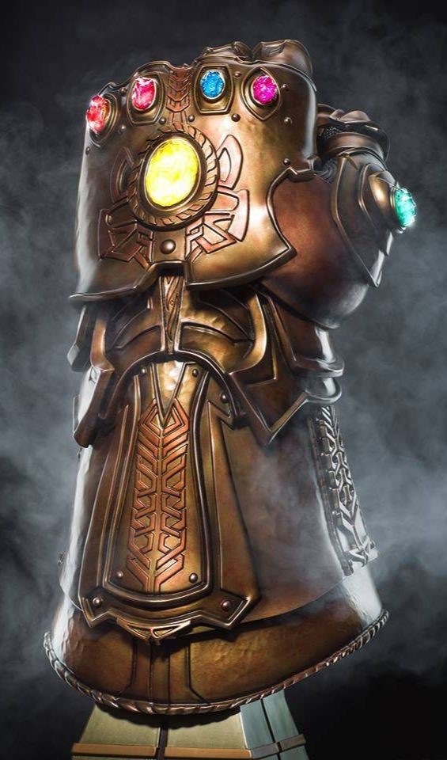

|
 In comic book lore, the infinity stones represent ultimate power. If one person possesses them, then his every desire will be realized with just a snap of his fingers. Disney brought in nearly 5 billion dollars based on the villain Thanos acquiring these stones in the last two Avenger movies. Does such a power exist in the Diplomacy world? I don’t want to overstate my case, but I believe there are skills that will help you influence the board in a powerful way that might even seem godlike to some. Tactics and strategy are vital in high level play but there is another ability that will separate your play from others: learning how to weaponize other people’s emotions. Unlocking them rests in understanding human nature and how to discern what motivates each of the players on the board. Admittedly, some of these motivations are more powerful depending on their context. In the quick deadlines of face to face play, you’ll find some emotions are hard to manipulate because of lack of time. The less personal nature of online play also presents unique challenges.
Just as there are six infinity stones, there are six emotions we will be analyzing. Players who understand these emotions don’t usually need to lie. Instead, they can manipulate through insinuation and suggestion. They become a master of whisperers that turn their rivals’ heads wherever they want. GreedAn overarching theme of Sun Tzu’s Art of War is that anger and greed are the fundamental causes of defeat. When it comes to high level play, greed is one of the most powerful emotions in your arsenal of manipulation. Your best players are constantly looking for avenues of expansion. If you can show them a better path, they usually will agree even if it means betraying their ally. In fact, most alliance shifts can be boiled down to someone wanting to grow in a faster way than their current alliance. Be aware when a greedy player’s growth is slowing down. This is the likely time when a stab will come. To maintain an alliance you need to continue to offer better paths of expansion.
Pay close attention when a greedy player asks for one of your centers. They often will ask in the spirit of wanting to keep the alliance balanced but know this…it is not a request. In a recent tournament game, I (France) was allied with Germany. He began requesting Belgium, but I explained there were better opportunities. He agreed, but then I heard he was planning to take Belgium with England’s help. With only a short time before the deadline, I told him he could have Belgium if he promised to attack Russia and support me to the North Sea. This was the defining move of the game, and I eventually soloed and secured my place on the final board. This illustrated another great strategy: hold off offering a center until shortly before the deadline. If you have determined that this person is motivated by greed, he’ll often jump at the opportunity and not realize that his backstab is really only a short term gain. Understanding greed should help you anticipate moves. Greedy players will always make the move that locks in quick gains. FearThe Jewish prophet Jeremiah said, “He that flees from fear shall fall into a pit.” Fear is a part of every game because no one wants to lose. In a game, you have alliance changes, stabs, board leaders, and team ups. The ability to paint nightmare scenarios will give you a great advantage. Fears most powerful aspect is that it doesn’t even have to be real. The number of phantoms are limited only by your imagination. You can forecast threats that may never happen and there will be no penalty for it. Read into innocent moves an evil intent, blame setbacks on neighbors, or pass on “privileged” information. Last year, the Nexus held their first season. Over 130 players participated, and I was fortunate enough to compete in the finals. This game was one of the most enjoyable I’ve played, and there are several memorable moves I’ll never forget. This particular move set gives us two examples of the use of fear.
First, you see how I as France blocked an Italian stab. This was just a defensive guess on my part. Rather than brag about how much smarter I was, I mentioned that Russia had revealed his plans to me. This is of course a very believable lie because an enemy always wants someone to blame for their failure. A successful use of fear of betrayal. To my shame though I allowed fear to distract me. I had just pulled off an effective attack on England. The moment of his downfall was at hand. Yet, I was greatly concerned about Russia’s prospect for growth. He had established a strong presence in the south and with Austrian, Italian, and English help was poised to make gains on Germany. It was at that moment that England approached me about convoying to Norway and him supporting me into St. Petersburg. It was appealing because I wouldn’t lose my advantage if he lied and if he was truthful could deal a crippling blow to Russia. While every Diplomacy player loves an awesome convoy, I was primarily motivated by fear of Russian expansion. This was a mistake. There was still much game to play, and I should have locked in my build. The next turn he betrayed me. While this didn’t change England’s ultimate demise it did set me back two years. It was probably my biggest mistake of the game. There is one more great benefit with using fear: you place the mastermind label on someone else. You want the target to be on another power and a great way to do that is by hyping up the “best” player on the board. Overstate their tactical ability and their cunning. Keep the target on someone else so that you are the smallest threat on the board. If a player is always watching their back that means their gut will be open. EmpathyPeople don’t care how much you know until they know how much you care. This old cliché may seem ineffective in a game that encourages selfish play and if we’re being honest, it usually is. Yet, empathy is an emotion that has a very powerful effect on some players. In the Season 2 Nexus finals, I found out how important it was when my Turkish position was collapsed. It was Spring 1908, and I had carefully nurtured my relationship with England. I had done all the things that I thought would earn his trust. While he was being attacked by France and Russia, I had attacked Russia to free him up. This was admittedly for selfish reasons because I was afraid France would break out. I had also the turn before supported him into Moscow. He had promised all kinds of things how we would work together, and he would help me the following turn. I was facing an A/F attack now and knew that I needed to take Ukraine to help solidify my gains. I asked for support from Moscow in return for all the help I’d been. In the meantime, A/F were pressuring England hard that he’d be giving me the game if he did so. England was a player who was not overly confident in his ability and was feeling the pressure in his personal life by this indecision. When the moves resolved this happened.
I was furious. I had been the only one who had actually helped him in the game. What made him betray me? Was it a tactical decision? No. He said what finally made him change his moves last minute was when Austria told him he shouldn’t let this take time away from his family and to go spend time with them. That was all it took for him. Of course, I’d argue that this was a stupid decision on his part because Austria went on to win the game (he should have supported neither of us). But in retrospect, I had neglected to see how much empathy affected him. Empathy is an emotion that most Diplomacy players fail to use. While it is easy to come across as fake if used frequently, a careful sprinkling of such discourse never hurts and can actually yield great results. For instance, you should be the first one to commiserate with someone who has just been stabbed. Let them know you understand how that feels and that you’ve had that happen in the same circumstances. Commiserate with them in their anger towards other players. If someone says someone is upset at them, tell them the same person is upset at you. If they are called a liar, create events where he has lied to you also. Of course, always pay attention when personal information is revealed. Is someone going through a difficult time with a relationship, a death, or just general stress? We all know the stress that Diplomacy can bring to a person so empathy and understanding should come easy. By the way, you should genuinely be concerned in the wellbeing of other players, but for the many sociopaths out there at least pretend to be. Who knows? Empathy might just win you a tournament. Revenge"My name is Inigo Montoya. You killed my father. Prepare to die!" This line from The Princess Bride has been seared into the public consciousness. He is a perfect example of someone who dedicated himself to right the wrongs of the past through unrepentant revenge. Diplomacy is a game that requires lots of time and mental energy. It requires you build trust and to a certain extent a form of friendship. When such trust is broken, some will fall apart mentally and become disinterested in the game. Others though will decide the most immediate and satisfying goal should be revenge on the perpetrator. This is especially true in high stakes games. A stabbed ally is fertile grounds for manipulation. Their hurt and anger are easily directed. Often times, the person can be nurtured into a useful puppet if you give them the revenge they desire. This can also be very appealing to those who want some dignity or control over their demise. Presenting yourself as a new ally that can keep them in the game so they can have their revenge can bring great benefits. Another strategy is to nurse their grudge publicly. Help facilitate the discord between powers. Defend them when they are insulted. There has been several times that I was moving towards a solo and the anger of the board was on another player because of their personality or poor play. Look at this:
This is from a tournament game not too long ago that I soloed as France. You’ll notice England is supporting me to Norway even though I own all his home centers. Why would he do this when I was the one who backstabbed him? The answer is he wanted revenge against Russia who had not come to his aid. I presented myself as an honorable enemy and Russia as the foolish power. I even agreed that Russia and Germany had made bad moves and should have been trying to help him earlier. This further nurtured his desire for revenge. I also promised to keep him in the game though when the solo chance presented itself I took it. Even then, he was ok with going out as he was secure in the knowledge he had ruined their game. A real danger to be watchful of is when a person’s greed overtakes their desire for revenge. A player can say they’ll be your puppet but be careful of giving them an opening to get back in the game. Better to keep them overstretched and take their home centers quickly. Let their growth come in distant lands. If not, they may get visions of grandeur of a great comeback. Finally, don’t underestimate the power of making others believe you are out for revenge. In one game, I had taken Belgium with German support. Afterwards, I began telling England that Germany was now demanding Belgium for himself, and I had made the wrong choice to go with Germany. This lowered his defenses for a double stab that crippled him. Being able to use revenge to your advantage is vital for high level play. While some will not care to get revenge, many will jump at the chance. The goal is to keep others from seeking revenge on you while focusing their fury on others. If you do this, you’ll have a super power to unleash in your games. FlatteryThe famous movie starlet Mae West said, “Flattery will get you everywhere.” This particular emotion is very dangerous to deploy though. If a person realizes that you are being insincere, flattery can instead get you killed. Yet, there are players whose egos are very susceptible to praise, especially in online play. Flattery cannot be blatant. Giving excessive compliments can come off as fake. I for one am often very suspicious of any type of compliment. Instead, pursue a more subtle approach like seeking their opinion on your own moves. Asking someone for advice is its own type of flattery and can often reveal their moves and motives. “That move was very impressive. I’d love to know why you did that.” “How did you see that coming?” Ask for advice and if you don’t follow it, allow them to think it is due to incompetence rather than treachery. Approaching others this way helps the other powers to not view you as a threat. Some people may think that putting yourself down while giving praise to others is effective. I think most people see through this type of false humility. A better way is to deal with put downs and also to take responsibility for bad moves. Your flattery will be much more effective if you aren’t defensive when attacked. This was clearly illustrated in the Nexus Season 2 Finals. I was Turkey and had been striving to get Austria to see that a wintergreen had formed against us. He refused to see the backstab that came in Spring 1902.
As you can see, my discussion afterwards was very pointed. Did I believe he was really my puppet? No. Did he deserve this criticism? Yes. He gritted his teeth at this insult and used it to his advantage. I should probably mention at this time that Austria ended up going on to win the finals. Flattery is important when you are the smaller power. You often have to listen to people put down your skill and blame you for your bad position. Yet, learning how to humbly deal with such criticism will help you change your fortunes. Flattery can also help calm the person you just stabbed. Praising their skill can help mitigate the pain of their bad position. I think it’s also important to note that flattery is most effective when you believe it is true. Everyone wants to be appreciated and respected subconsciously. Our own vanity is the reason flattery works in the first place. This is why Dale Carnegie author of How to Win Friends and Influence People said, “Flattery is telling the other person precisely what he thinks about himself.” This of course is laying a trap. As the proverb goes, “Pride goeth before destruction, and a haughty spirit before a fall.” FriendshipWith friends like this, who needs enemies? Such a cliché would seem especially appropriate in a Diplomacy game where your most dangerous foe is often your closest ally. Even thought the stabs you remember are the wounds of a friend, your ability to cultivate a friendship can be the difference between a solo and a loss. I was reminded of this in a recent tournament game. In the first year, Germany misordered which caused me (England) to lose a build (at least that was his excuse). While there weren’t any hard feelings; I decided France and Russia were more reliable. Then in Fall 1904, I made a mistake:
As you can see, I left a center open for Germany to retreat into. In a last act of good will, Germany disbanded and allowed me to continue the fight against Russia. You can be sure if I had dealt harshly with him at the beginning this would have never happened. Instead, that guilt of slowing down our alliance caused him to give me one last kind act in the end. The result was I ended up topping the board at 16. Being able to develop a good rapport is vital in any Diplomacy game. One of the struggles that some new players have to the f2f scene is being able to convince strangers that they are competent in the game. For some veterans the enemy you know is safer than the person you don’t. Friendliness and an easy going demeanor though can go a long way to bridge the gap. Arrive early and spend time getting to know each of the players. Strive to find points of commonality in background, work, or sports. It’s also good to figure out the friendships that are already in the room; one of them will need to be eliminated quickly if they’re in your game. It’s wise also to ask people’s opinion of other players. You’ll be well along the path to victory if you can determine the grudges that need nursing. Developing friendship is incredibly important in an online game. Finding points of commonality often times dictates how alliances form. The best way to reveal this information is to disclose things about your own life. Does this person have a family? Where do they work or grow up? What about politics and religion? That’s an area of course one needs to be very careful, but in online play you can become whoever you need to be. One player I know actually took to mirroring so much that he even went so far as to say he had the same name as another player! Once you stab in an online setting though it is very difficult to get back those feelings of good will. In fact, it often is wise to not even consider a stab of someone you have developed a friendship with unless you’re sure it will give you a win. It is very easy to wear your heart on your sleeve in such cases and there have been spectacular blow ups when a “friend” has stabbed you. Often times, your best course is to strive to intermingle guilt rather than blow up in those circumstances. You most definitely have mastered the art of friendship if you can stab your ally and they aren’t upset. Always be sure to shoot off a quick message explaining that you are going for the solo and appreciate them as a person. The great thing about Diplomacy is that it really is a great place to make friends. If you click with someone and the friendship continues after the blood has been cleaned off the board…you’ve found a friend for life. Hold onto that guy but always check his pockets for knives.
If you wish to e-mail feedback on this article to the author, and clicking
on the envelope above does not work for you, feel free to use the
|
 Using these emotions are for those that go into games looking to solo. Finding an ally, getting to 8-9, and then turtling is a way to play. But…you don’t become Thanos by racking up draw after draw. This is for people that want to win and be in control of the levers of power.
Using these emotions are for those that go into games looking to solo. Finding an ally, getting to 8-9, and then turtling is a way to play. But…you don’t become Thanos by racking up draw after draw. This is for people that want to win and be in control of the levers of power.


 Greed. Fear. Revenge. Empathy. Flattery. Friendship. Being able to wield these emotions are vital for sustained dominant play. Master their use. Don't forget though that the key is finding out which of these emotions work best on a particular player. Once you have that, it will only take a snap.
Greed. Fear. Revenge. Empathy. Flattery. Friendship. Being able to wield these emotions are vital for sustained dominant play. Master their use. Don't forget though that the key is finding out which of these emotions work best on a particular player. Once you have that, it will only take a snap.